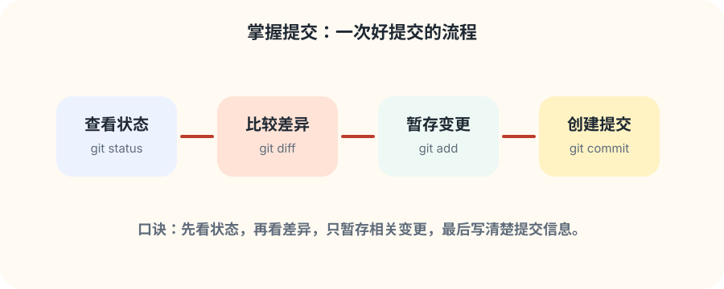
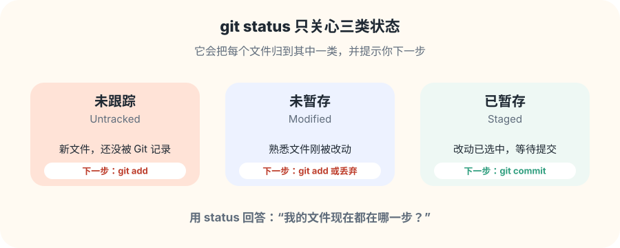
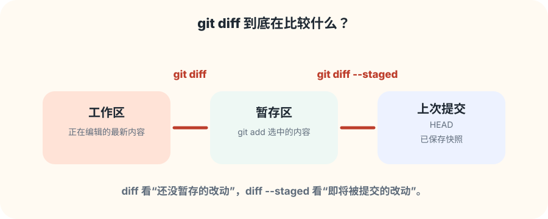
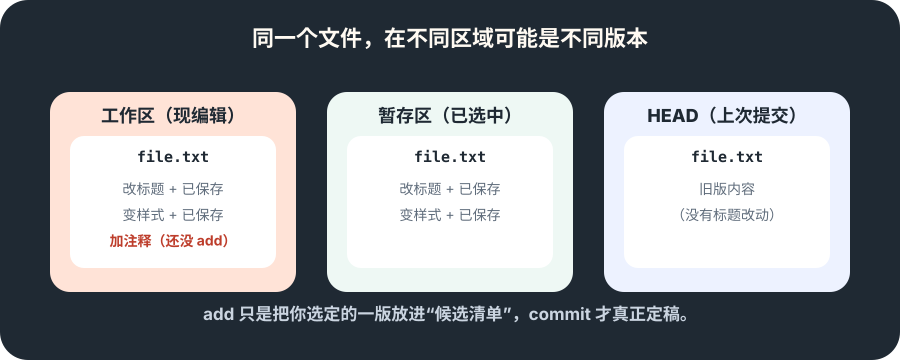
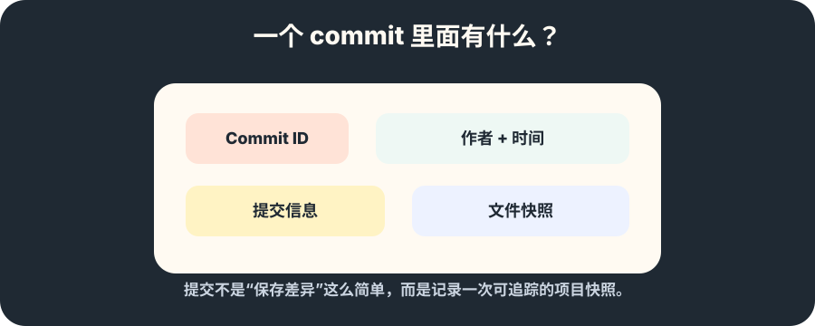
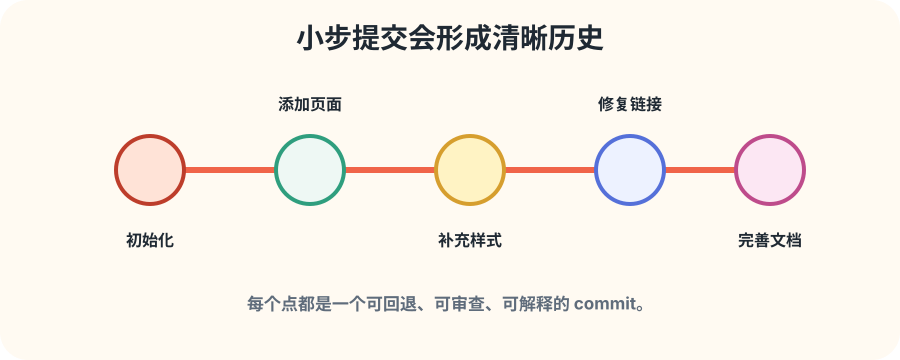
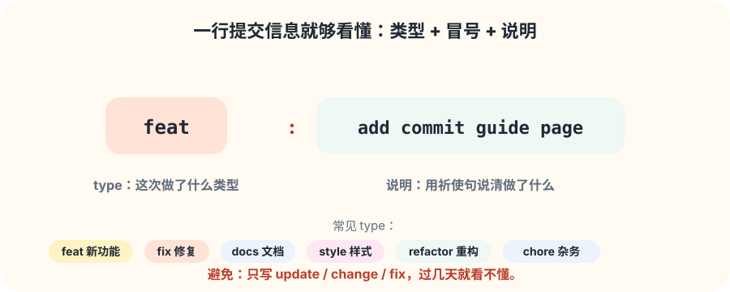
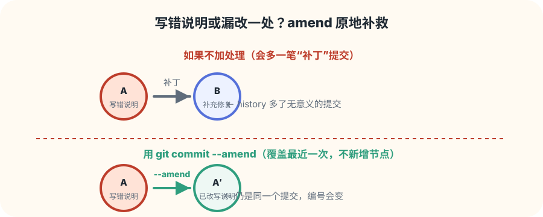

看状态：我改了什么？
git status 把文件归成三类。你只需要先看懂这张清单。
新增页面
把“保存代码”升级成“留下清晰历史”：用多张图和循序渐进的小练习，学会 status、diff、add、commit 这四件事。
先建立概念

掌握提交的关键是“四步确认”：看状态、看差异、选内容、写说明。别急着背命令——先顺着下面每一张图，把每一步“为什么要做”看懂，命令自然会记住。
页面地图
git status 把文件归成三类。你只需要先看懂这张清单。
git diff 与 git diff --staged 帮你核对每个改动细节。
用 git add 精准暂存，一提交只讲清楚一件事。
提交信息用“类型 + 冒号 + 说明”，别人扫一眼就明白。
第 1 步 · 看状态

新文件显示为未跟踪，改动过的老文件显示为未暂存，被你 git add 选中的显示为已暂存。
status 不仅告诉你状态，还会直接提示下一步命令，跟着它走就不会慌。
git status，看有没有“未暂存”和“未跟踪”。第 2 步 · 看差异

git diff 对比的是工作区和暂存区——你能看到有哪些改动还躺在工作区里没被选中。
git diff --staged 对比的是暂存区和最近那次提交（HEAD）——你即将提交的内容，和上次保存好的版本差多少。
一个帮你“查漏”，一个帮你“把关”，提交前各跑一遍最稳妥。
第 3 步 · 选内容

你可能在文件里同时改了标题、样式，还加了一行注释。用 git add 文件名 一次全部暂存，下次想拆开就难了。
想只提交一部分，就用 git add -p，它会把改动切成小块，问你要不要选中每一块。
原则：一次提交只讲清楚一件事。修复 bug、加功能、改文档，分开提交才容易回退和审查。
图解 commit

每个 commit 都有唯一编号（Commit ID）、作者和时间、提交信息，以及一份完整的文件快照。
Git 正是靠这些快照，把项目历史串成一条可追踪的时间线。所以提交比“保存”多了一层含义：它是一段可以被翻出来、被回退、被讨论的记录。
为什么要小步提交

如果一个提交里同时改样式、修 bug、加功能，几天后再排查问题会非常痛苦。
把不同目的拆成多个小提交，团队里其他人能顺着你的思路，一眼看出每一步做了什么、为什么这样做。
第 4 步 · 写说明

提交之后 · 补救

提交完马上发现：说明写错了，或者少存了一个文件。这时先 git add 补上的改动，再运行 git commit --amend。
它会改写最近一次提交（编号会变化），历史里不会多出一个毫无意义的“补充修复”节点。
注意：amend 只适合还没推送（push）到远程的提交。已经推给别人的提交，不要再改写。
动手练习
notes.md，写 3 条 Git 学习笔记。git status，确认文件处于未跟踪状态。git add notes.md，再运行 git diff --staged 检查暂存内容。git commit -m "docs: add git learning notes" 创建提交。git add notes.md 后 git commit --amend，观察它并进了同一笔提交。git log --oneline -3，确认历史干净清晰。